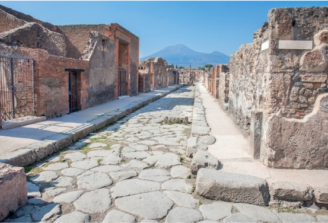

Майстерня слів
Велика літера
Крапки
1 Обведи в тексті слова та знаки за кольоровою підказкою і дай відповіді.
Скільки крапок ти обвів (обвела)?
Скільки великих літер ти обвів (обвела)?
2 Запиши кожне обведене слово у відповідне місце.
Перше слово в тексті
Слова, які йдуть одразу після крапки
Імена людей або назви місць
